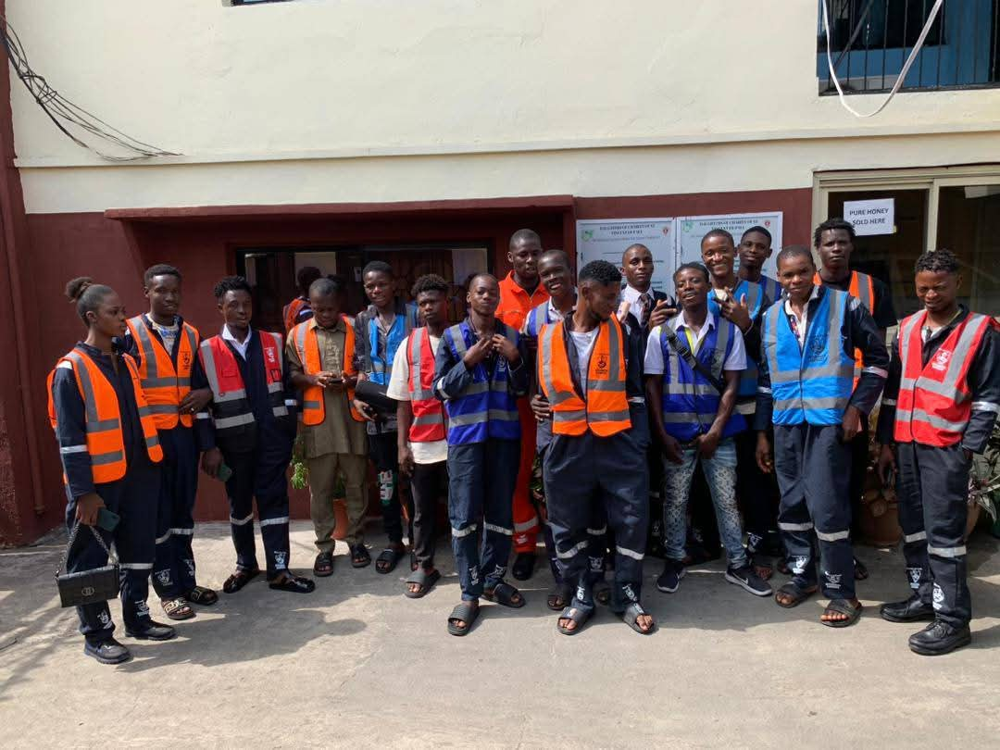

Wisdom Pepple began taking minor jobs after secondary school and gained early work experience.
About Norahsprint
Building spaces. Creating value.
NORAHSPRINT INTEGRATED SERVICES is a growing Nigerian construction, interior finishing, furniture and building-services company committed to quality workmanship, professional project execution and innovative solutions.

Our story
Built from practical experience and a good footprint.
Founded and led by Wisdom Pepple, Norahsprint grew from craftsmanship, determination, teamwork, mentorship and a commitment to developing young people through practical skills.
We work with residential, commercial, institutional and public-sector clients, bringing together construction, interior finishing, furniture and integrated building services.
Our journey
A story shaped by work, learning and progress.
On 7 February, he began technical training at Genius Engineering, developing welding and fabrication skills. After about one year, he moved to Peko Nigeria Limited and also gained experience in electrical work, painting, welding and fabrication, including exposure through work with NEPA.
Wisdom gained admission into Rivers State University.
Norahsprint fully came into existence. The name honours Wisdom's late grandmother, Dora Nora: “Wherever you go, leave a good footprint.” Nora represents her memory and legacy; Sprint represents movement, progress and determination.
Norahsprint continued taking on projects and developing its team, capabilities and operational structure. Team members travelled to Lagos to build knowledge in POP work and furniture production before returning to Port Harcourt.
Norahsprint formally established its furniture department and secured a dedicated workshop and operational location.
Norahsprint continues developing from a hands-on operation into a structured and professionally positioned company, guided by the principle: “Wherever we go, we leave a good footprint.”
Vision
Leading with excellence and integrity.
To become a leading and globally respected Nigerian company in construction, interior finishing, furniture and integrated building services, recognized for excellence, innovation, integrity and the ability to deliver quality projects at scale.
Mission
Professional solutions that meet real needs.
To provide reliable, professional and innovative construction and interior solutions while maintaining high standards of workmanship, safety, efficiency and customer satisfaction. We are also committed to developing skilled young people through practical training, mentorship and sustainable career opportunities.
Core values
The principles behind every project.
Leadership
Wisdom
Pepple
Founder & Chairman
Wisdom Pepple founded and leads Norahsprint Integrated Services, building the company from hands-on practical experience and a belief in the value of craftsmanship, teamwork and growth.
People & skills development
Skilled people, practical learning.
Norahsprint develops young people through practical work, mentorship and skilled-trade experience in furniture making, painting, screeding, POP, electrical works and other trades.

Teams & departments
Specialists, connected by one standard.
Why choose Norahsprint
Capability with a practical point of view.
Growth & future direction
A roadmap for what comes next.
Our commitment
Building more than beautiful spaces.
Building trust, careers, partnerships and a legacy.
Start a Project